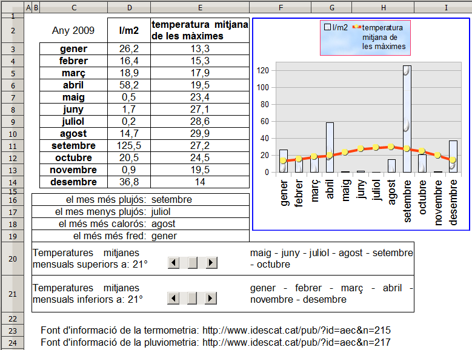

Presentació gràfica de l'activitat

Funcions que es fan servir en aquesta activitat
Objectiu de l'activitat
Interpretar un diagrama representatiu d'una taula de dades contestan a preguntes referents a aquestes informacions.
Desenvolupament de l'activitat
1. Obrir el fitxe M7 i canviar el nom del full2 pel de pluja i temperatura
2. Escriure a les cel·les del rang C2:E14 les dades que es veuen al gràfic de la presentació de l'activitat.
3. Escriure a la cel·la L3: =C3 per mostrar el mes de gener.
4. Copiar la cel·la L3 a les cel·les del rang L4:L14 obtenint així la llista dels mesos de l'any.
5. Escriure a la cel·la E16: =CONSULTAV(MAX(D3:D14);D3:L14;9;0)
Amb aquesta fórmula s'obté el mes més plujós.
6. Escriure a la cel·la E17: =CONSULTAV(MIN(D3:D14);D3:L14;9;0)
Amb aquesta fórmula s'obté el mes menys plujós.
7. Escriure a la cel·la E18: =CONSULTAV(MAX(E3:E14);E3:L14;8;0)
Amb aquesta fórmula s'obté el mes amb temperatura més alta.
8. Escriure a la cel·la E19: =CONSULTAV(MIN(E3:E14);E3:L14;8;0)
Amb aquesta fórmula s'obté el mes amb temperatura més baixa.
9. Fer una barra de desplaçament i enllaçar-la a la cel·la B20 amb les següents característiques:
valor mínim de desplaçament: 0
valor màxim de desplaçament: 30
Format de la cel·la en graus (o)
Fent clic al extrems d'aquesta barra, anirant canviant el valors de la cel·la B20. L'objectiu és que a la cel·la
F20 es vagin mostrant els mesos de l'any que compleixin amb la condició del valor variable de la cel·la B20
(observar els continguts de les cel·les F20 i F21 del gràfic de la presentació de l'activitat)
Per fer que les cel·les
F20 i
F21 mostrin els mesos corresponents, es pot fer el següent:
10. Escriure a la cel·la
N3:
=SI(E3>=$B$20;C3&" - ";"")
Si el valor de la cel·la
E3 és major o igual a la cel·la de la temperatura variable
(B20), llavors
es mostra el contingut de la cela
C3 (més de gener) més la concatenació d'un espai, guio i espai
(_-_) a la cel·la
N3; si no,
no es mostra res.
11. Copiar la cel·la
N3 i enganxar-la a les cel·les del rang
N4:N14
12. Escriure a la cel·la
O3:
=SI(E3<$B$21;C3&" - ";"")
13. Copiar la cel·la
O3 a les cel·les del rang
O4:O14
14. Escriure a la cel·la
L20:
=N3&N4&N5&N6&N7&N8&N9&N10&N11&N12&N13&N14
15. Escriure a la cel·la
L21:
=O3&O4&O5&O6&O7&O8&O9&O10&O11&O12&O13&O14
Amb els passos 14 i 15 ja es té la informació que compleix amb les valors variables de les cel·les
B20 i B21.
Per treure el guió final de l'últim més, es pot fer el següent:
16. Escriure a la cel·la
K20:
=LONG(L20)
Amb aquesta fórmula s'obté el número de caracters de la cel·la
L20 i que servirà de base per esborrar el guió de l'ultim mes.
17. Escriure a la cel·la
F20:
=MIG(L20;1;K20-2) per treure el guió de l'últim mes.
18. Fusionar les cel·les que convingui.
19. Comprovar que l'activitat funcioni correctament.
20. Desar el fitxer
M7.
Nota:
Com a exercici, es proposa fer aquesta mateixa pràctica afegint quelcom més. Per exemple
Temperatures superiors a 21º
Temperatura de 21º
Temperatures inferiors a: 21º
Fer cel·les d'avalució per comprovar que l'alumne contesti bé les preguntes
Fer una activitat semblant a aquesta pràctica on les dades de les temperatures i de la pluviometria variin de forma aleatòria i fer cel·les avaluadores per comprovar les respostes de l'alumne.